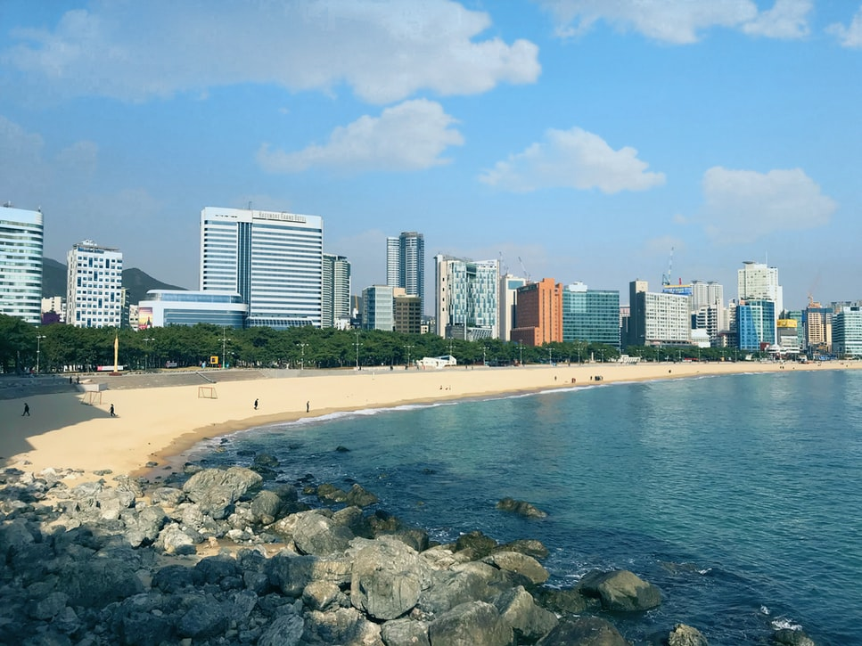

Busan (Korean pronunciation: [pusan]), formerly romanized as Pusan and now officially known as Busan Metropolitan City, is South Korea's second-most populous city after Seoul, with a population of over 3.4 million inhabitants.[3] It is the economic, cultural and educational center of southeastern South Korea, with its port—Korea's busiest and the sixth-busiest in the world.[a] The surrounding "Southeast Economic Zone" (including Ulsan and South Gyeongsang) is South Korea's largest industrial area.
Busan is divided into 15 major administrative districts and a single county, together housing a population of approximately 3.6 million. The full metropolitan area, the Southeastern Maritime Industrial Region, has a population of approximately 8 million.[5] The most densely built-up areas of the city are situated in a number of narrow valleys between the Nakdong and the Suyeong Rivers, with mountains separating most of the districts. The Nakdong is Korea's longest river and Busan's Haeundae Beach is also the country's largest.